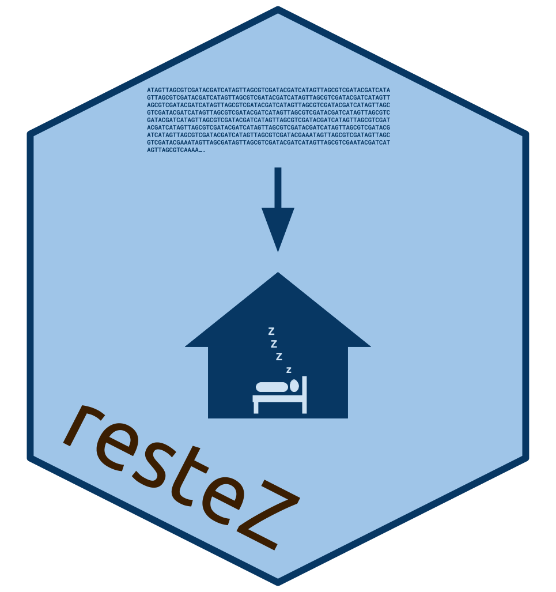

Create and Query a Local Copy of GenBank in R.
Download parts of NCBI’s GenBank to a local folder and create a simple SQLite database. Use ‘get’ tools to query the database by accession IDs. rentrez wrappers are available, so that if sequences are not available locally they can be searched for online through Entrez.
Introduction
Vous entrez, vous rentrez et, maintenant, vous …. restez!
Downloading sequences and sequence information from GenBank and related NCBI taxonomic databases is often performed via the NCBI API, Entrez. Entrez, however, has a limit on the number of requests and downloading large amounts of sequence data in this way can be inefficient. For programmatic situations where multiple Entrez calls are made, downloading may take days, weeks or even months.
This package aims to make sequence retrieval more efficient by allowing a user to download large sections of the GenBank database to their local machine and query this local database either through package specific functions or Entrez wrappers. This process is more efficient as GenBank downloads are made via NCBI’s FTP using compressed sequence files. With a good internet connection and a middle-of-the-road computer, a database comprising 20 GB of sequence information can be generated in less than 10 minutes.
For more detailed information on the pacakge’s functions and detailed guides on downloading, constructing and querying a database, visit the restez website.
Installation
You can install restez from github with:
# install.packages("devtools")
devtools::install_github("AntonelliLab/restez")Quick Examples
For more detailed tutorials, visit the restez website.
Setup
library(restez)
# choose a location to store GB files
restez_path_set('.')
# run download function
# interactively choose GenBank files to download
gb_download()
# create local database
db_create()Query
library(restez)
# set a restez path
restez_path_set('.')
# create a demo database
demo_db_create(n = 10)
# contains fake sequence data of 10 records
(all_ids <- list_db_ids(db='nucleotide'))
# you can extract:
# sequences
seq <- gb_sequence_get('demo_1')[[1]]
print(seq)
# definitions
def <- gb_definition_get('demo_1')[[1]]
print(def)
# organisms
org <- gb_organism_get('demo_1')[[1]]
print(org)
# or whole records
rec <- gb_record_get('demo_1')[[1]]
cat(rec)Entrez wrappers
library(restez)
# setup as above
restez_path_set('.')
demo_db_create()
# use the entrez_* wrappers to access GB data
demo_record <- entrez_fetch(db='nucleotide', id='demo_1', rettype = 'fasta')
# if the id is not in the local database
# these wrappers will search online via the rentrez package
real_record <- entrez_fetch(db='nucleotide', id='S71333.1', rettype = 'fasta')Contributing
Want to contribute? Check the contributing page.
References
Benson, D. A., Karsch-Mizrachi, I., Clark, K., Lipman, D. J., Ostell, J., & Sayers, E. W. (2012). GenBank. Nucleic Acids Research, 40(Database issue), D48–D53. http://doi.org/10.1093/nar/gkr1202
Winter DJ. (2017) rentrez: An R package for the NCBI eUtils API. PeerJ Preprints 5:e3179v2 https://doi.org/10.7287/peerj.preprints.3179v2